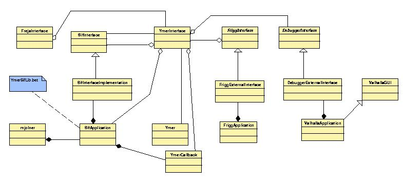
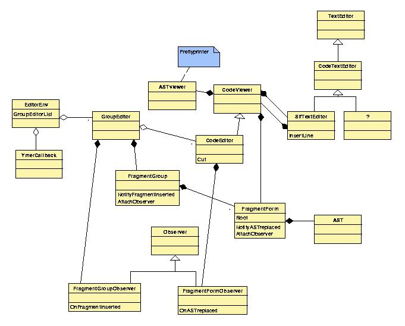

Betamøde om arkitektur af Mjølnersystemet

Torsdag d.13.september 2001, kl.14.
Til stede: ESS,FGC,SOSH,KFJ,HML,MBE,MEJ,KSJ
Referent: MEJ
Dato for næste møde: Fredag d. 28. spetember 2001, kl.
12.15 - 14.
Xml-filerne er bygget v.h.a. Ideogramic UML og kan redigeres hermed.

FlemmingVedTavle1.mov
FlemmingVedTavle2.mov
Referat
1. Ønsker om afklaring
-
MEJ: generelt overblik, menuer og evt. diskussion af forsimplinger
-
FGC: opdatering af treeview (KFJ påtager sig opgaven)
-
SOSH: interface mellem debugger og Mjølner Tool
-
KFJ: interface mellem guienv og Bifrost
-
HML: interface mellem Mjølner Tool og meta-programmeringssystemet
-
MBE & KSJ: overblik
2. FGC-gennemgang af overordnet arkitektur

(pdf , xml)
Mytologiske navne, som del-applikationerne tidligere havde og nu forsøges
erstattet med mere sigende navne:
-
Sif = editor, som bruges i textEditMode
-
Ymer = sourcebrowser, som bruges til at navigere i syntax-strukturen
-
Freja = CASE-tool
-
Frigg = GUI-editor
-
Valhalla = debugger
-
Lidskjalv = guienv
-
Bifrost = grafik
-
Yggdrasil = mps
I forbindelse med "opsætning af menuer" opstod der en lille, principiel
diskussion om løs eller fast kobling mellem del-applikationerne
og deres menuer. Det er meget besværligt at rette menuerne til i
nuværende opbygning, men der er gode arkitekturelle grunde til at
bevare de løse koblinger for nemmere at kunne fjerne eller indsætte
større del-app. (FGC eksempel: Knight).
3. ESS-gennemgang af Sif m.m.
ESS: formålet er at starte med at lave en kortlægning af arkitekturen,
som så kan bringe evt. kritikpunkter og medfølgende ændringsforslag
tilveje.

(pdf, xml)
Flg. er løse noter, som forhåbentlig kan bruges sammen
med de færdige UML-diagrammer til at skrive en informativ gennemgang
af MjølnerTools arkitektur.
-
FragmentForms-kassen i MjølnerTools hovedvindue er et eksempel på
en GroupEditor.
-
Vi har 1 GroupEditor for hver bet-fil i 'Recent', og vi har 1 CodeEditor
for hver FragmentForm, vi har haft åbnet.
-
CodeViewer præsenterer et AST textuelt i en SifTextEditor (som er
en CodeTextEditor, som er en TextEditor af den gode gl.dags slags fra GUIenv).
BETA-indenteren, som MBE har lavet, ligger i CodeTextEditor (dvs. separat
fra SifTextEditor) og tilbyder således BETA-uafhængige features,
der kan bruges hvis man vil lave en indenter til et andet sprog. Diskussion
af hvorvidt CodeTextEditor og SifTextEditor kan lægges sammen for
simpelhed og overskuelighed endte uafgjort.
-
CodeViewer har en ASTviewer, hvilket i virkeligheden blot er en prettyprinter.
KFJ foreslår at omdøbe ASTviewer til PrettyPrinter.
-
Man kan gruppere delene under Controller-Model-View, hvor view er varianterne
af TextEditor beskrevet ovenfor, Controller består af CodeEditor,
CodeViewer og ASTviewer m.m. og Model består af FragmentForm og FragmentGroup.
-
Kritik af navngivning: SifTextEditor er jo egentlig en "viewer", men efternavnet
"viewer" bruges i model-delen!? Ang. erstatning af mytologiske navne: "Sif"
skal også fjernes.
-
CodeViewer og CodeEditor (som arver fra CodeViewer) kan godt lægges
sammen til een klasse, fordi man alligevel altid bruger CodeEditor
-
YmerCallback er interfacet til alt hvad man kan med sourcebrowseren f.eks.
'at følge et link'; Sif siger til SourceBrowseren: "Find fil x og
præsenter den, så ordner jeg resten". Navngivning: "Ymer" skal
fjernes/erstattes.
-
Observere: GroupEditor har en FragmentGroupObserver, og CodeEditor har
en FragmentFormObserver, som begge arver fra Observer. Modellen implementerer
observere, der kan bruges af controller-delen.
-
Samspillet mellem observers i Sif, GUI-editor og CASE-tool er vigtigt,
da de notificerer hinanden om events.
4. "Øvelser" til næste gang :-)
'Ideogramic'-UML-diagrammer krydscheckes med betakoden og kompletteres
inden næste møde af HML og MEJ
KFJ laver sekvensdiagram el. lign. for alle opdateringer af treeviews
ved f.eks. Insert Fragment Form